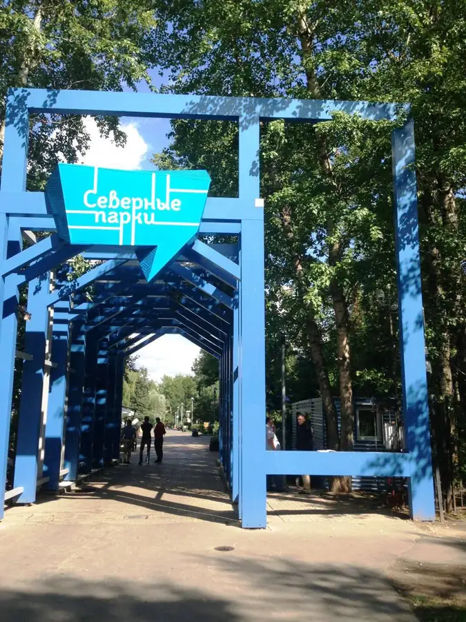

Фото: Mardiver, CC0 · Wikimedia Commons
Парк · СЗАО
Парк «Северное Тушино»
Парк у Химкинского водохранилища с подводной лодкой-музеем и экранопланом.
- ₽ · до 1 500 ₽ на человека
- в 2 планах
Позвать сюда: Парк «Северное Тушино»Открыть в каталоге: Парк «Северное Тушино»Маршрут до места: Парк «Северное Тушино»
Адрес и детали
- Адрес
- ул. Свободы, 50
Открыть на Яндекс Картах (в новой вкладке) - Метро
- м. Планерная
- Округ
- Северо-Запад (СЗАО)
- Цена
- до 1 500 ₽ на человека
- Проверено
- работает — проверили в октябре 2026
Планы с этим местом 2
- Парк «Северное Тушино» · Парк · м. Планерная
- 2 минуты пешкомЛазертаг Арена «Военный бункер» · Лазертаг
Подводная лодка-музей и экраноплан в парке «Северное Тушино», а рядом — круглосуточный лазертаг в декорациях военного бункера, час игры — 1 100 ₽.
Открыть план: Подлодка и лазертаг в бункереПозвать сюда: Подлодка и лазертаг в бункере
Фото: Mardiver, CC0 · Wikimedia Commons
- Парк «Северное Тушино» · Парк · м. Планерная
Подводная лодка-музей и экраноплан в парке у Химкинского водохранилища.
Открыть план: Подлодка и экранопланПозвать сюда: Подлодка и экраноплан
Фото: Mardiver, CC0 · Wikimedia Commons

Похожие рядом


Что ещё рядом
Как позвать
- Выбери план, место или событие — в карточке адрес, цены и маршрут в Яндекс Картах.
- Нажми «Позвать сюда» — соберётся приглашение-игра для свидания или голосование для компании.
- Отправь ссылку в любой мессенджер: тебе ответят, а компания отметит, куда и когда может. Бесплатно и без регистрации.